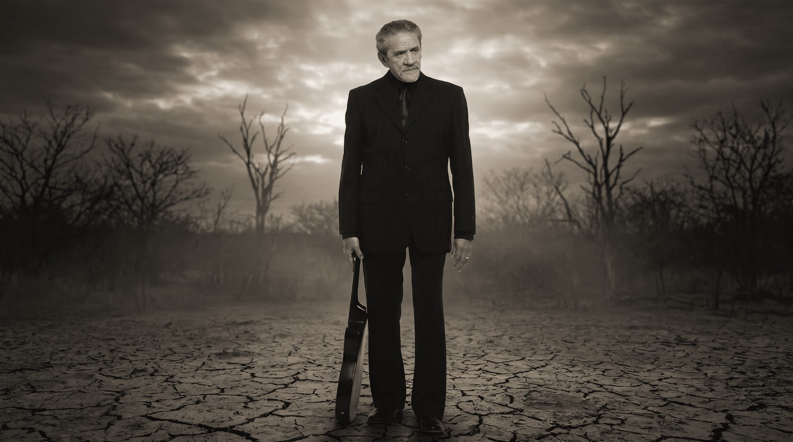
Trilogia • Fase I
Zé Ramalho 50 anos
A maior celebração já concebida para uma obra que atravessou o Brasil, conectou gerações e se transformou em parte da memória afetiva do país.
2027
3 fases
1 celebração nacional
O marco
Existe apenas uma primeira vez.
Existe o primeiro disco. O primeiro grande sucesso. O primeiro show. E existe uma única primeira celebração de 50 anos.
Em 2027, Zé Ramalho alcança um marco reservado a poucos artistas da história da música brasileira. Mais do que uma turnê comemorativa, o projeto propõe um acontecimento cultural à altura dessa trajetória.
Uma oportunidade única. Irrepetível. Histórica.
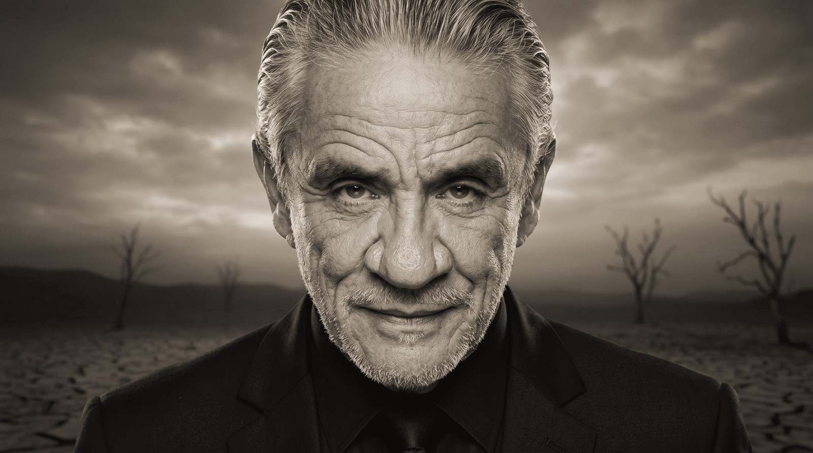
Cinco décadas de permanência
Uma obra que atravessou o Brasil.
Ao longo de cinco décadas, Zé Ramalho construiu uma das trajetórias mais consistentes da música brasileira. Sua obra ultrapassou estilos, atravessou regiões, conectou gerações e passou a viver na história de milhões de brasileiros.
O momento é agora
Não existe outro aniversário de 50 anos.
Também não existe outra oportunidade de reunir público, imprensa, parceiros e mercado em torno de um marco dessa dimensão. O projeto nasce com três objetivos claros:
Celebrar
Uma das maiores trajetórias da música brasileira.
Mobilizar
Milhões de pessoas que acompanharam essa história ao longo do tempo.
Registrar
Esse legado para as próximas gerações, de forma definitiva.
Uma celebração nacional
Um projeto com a dimensão da sua história.
Mais do que uma turnê, a proposta é uma jornada nacional construída para percorrer o Brasil inteiro, com mais de um ano de duração, participações especiais, projetos de mídia e registro histórico.
50anos de carreira
~60apresentações
20+cidades
5regiões do país
3fases
1legado
Trilogia dos 50 anos
Três capítulos. Uma única história.
O projeto se organiza em três grandes frentes complementares, cada uma com função própria dentro da celebração.
A Jornada
O capítulo que dá início às comemorações: uma homenagem às origens, à estrada, ao público e ao Brasil.
Os Encontros
A obra em diálogo com vozes, parceiros, repertórios e momentos capazes de ampliar ainda mais seu alcance.
A Permanência
O legado registrado para o presente e para o futuro, consolidando a memória dessa celebração.
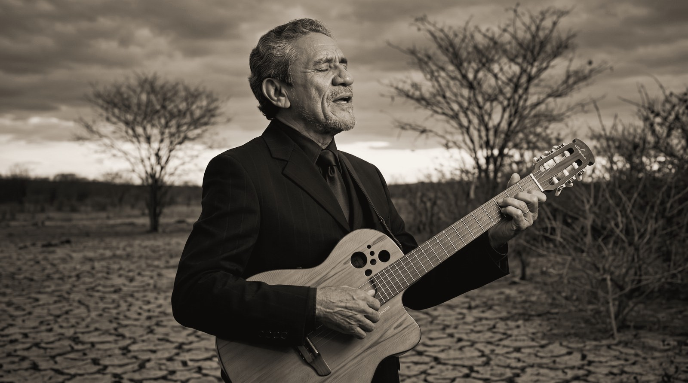
Fase I • A Jornada
Ao público. Ao Brasil. Às origens.
A Jornada abre oficialmente as comemorações dos 50 anos. É o capítulo mais abrangente da trilogia, pensado para honrar a formação simbólica da obra de Zé Ramalho e o vínculo construído com o país ao longo de cinco décadas.
É também a fase mais nacional, a mais popular e a mais capaz de transformar a celebração em experiência compartilhada.
Uma homenagem às origens, à estrada, ao povo e a tudo aquilo que ajudou a transformar essa trajetória em patrimônio cultural.
Os pilares da jornada
Três territórios explicam a força e a permanência da obra.
As origens
O sertão. A poesia. A espiritualidade. A imaginação. Referências que ajudaram a construir uma das vozes mais singulares da música brasileira.
A estrada
50 anos percorrendo o Brasil. Milhares de quilômetros. Centenas de cidades. Uma trajetória construída encontro após encontro, canção após canção.
O povo
Há muito tempo, essas músicas deixaram de pertencer apenas ao artista. Elas passaram a viver nas histórias de quem as canta, guarda e transmite adiante.
O Brasil como palco
Uma jornada nacional, construída para percorrer o país inteiro.
A Jornada percorrerá todas as regiões do país, iniciando em São Paulo e encerrando no Rio de Janeiro, com roteiro sujeito à disponibilidade de datas, locais e oportunidades estratégicas.
- Fevereiro de 2027 a março de 2028
- Capitais e mercados estratégicos
- Ações especiais em cidades emblemáticas
- Mais de um ano de celebração
+20cidades
~60apresentações
5regiões
1história conectando o país inteiro
ManausBelémSão LuísFortalezaNatalJoão PessoaRecifeMaceióAracajuSalvadorVitóriaBrasíliaGoiâniaCuiabáCampo GrandeSão PauloRio de JaneiroCuritibaFlorianópolisPorto Alegre
A maior turnê da carreira
Mais de um ano de estrada. Milhares de quilômetros. Milhões de pessoas impactadas.
Uma única história conectando o país inteiro.
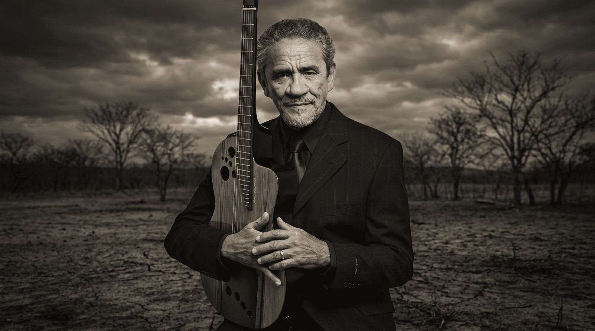
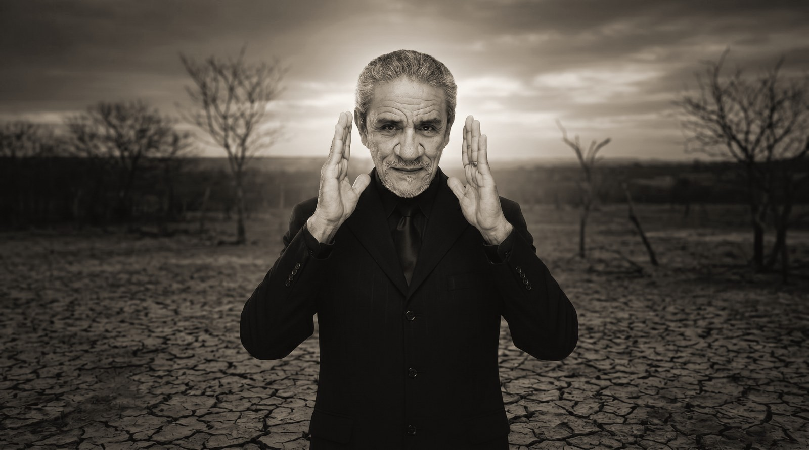
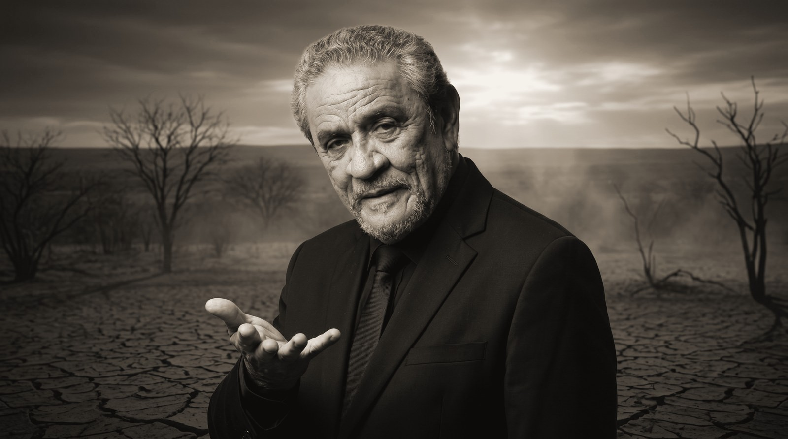
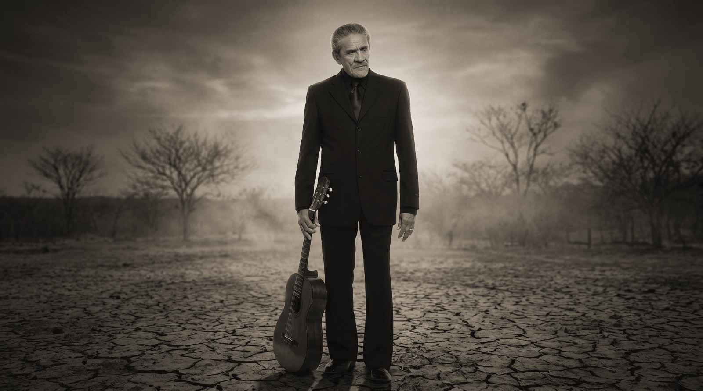
Encontros históricos
Uma obra em diálogo com grandes nomes da música brasileira.
Ao longo de cinco décadas, a obra de Zé Ramalho construiu conexões profundas com artistas, repertórios e públicos diversos. A celebração dos 50 anos abre espaço para encontros memoráveis — não como adereço, mas como parte da própria narrativa da trajetória.
Dentro desse universo, canções como Sinônimos se apresentam como pontos de convergência afetiva, capazes de transformar memória musical em momento histórico dentro da celebração.
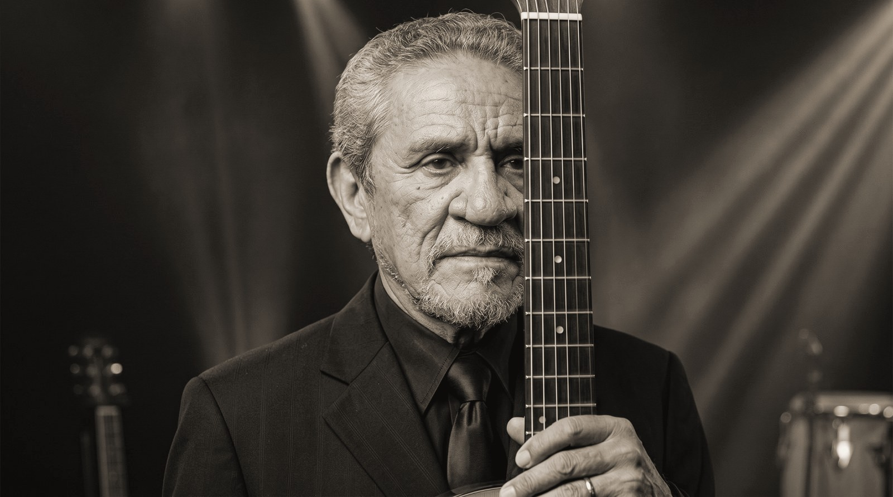
Participações especiais
Presenças pontuais, construídas como homenagem à trajetória.
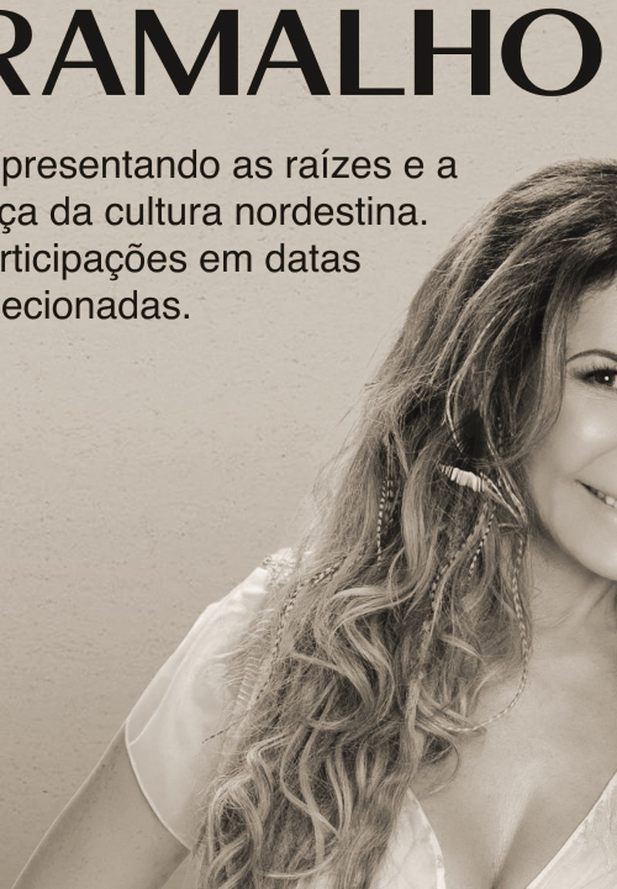
Elba Ramalho
Representando as raízes e a força da cultura nordestina. Participações em datas selecionadas, alinhadas ao peso simbólico da celebração.
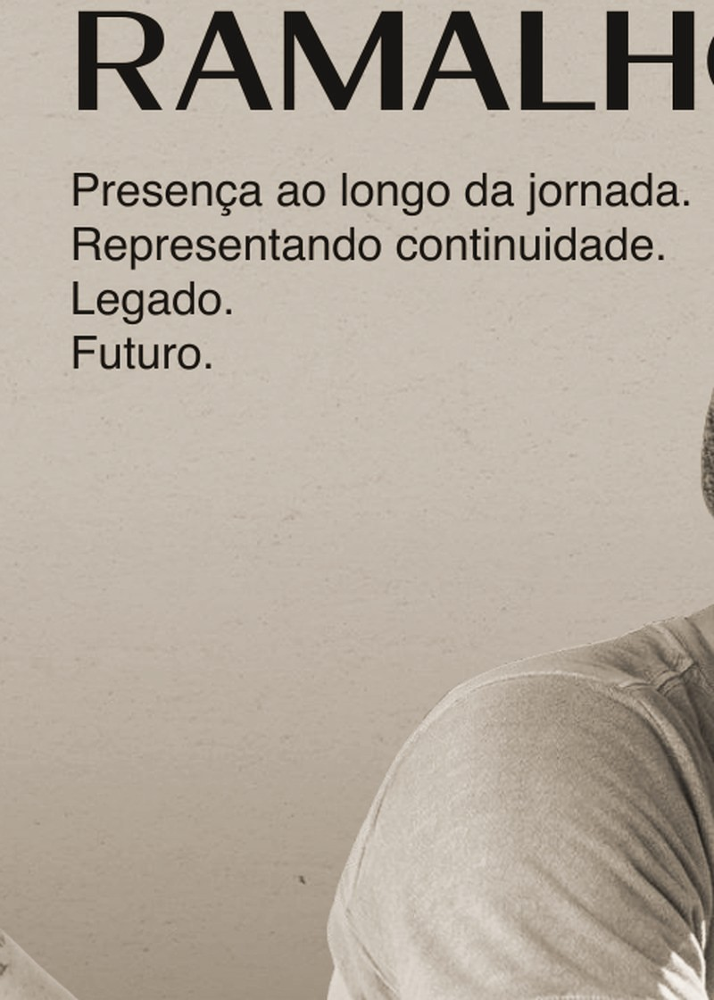
João Ramalho
Presença ao longo da jornada, simbolizando continuidade, legado e futuro. Mais do que convidado, um elo entre gerações.
Um acontecimento nacional
Uma celebração com potencial para ultrapassar os palcos.
O projeto se estende para além do circuito de shows, operando como plataforma cultural e de comunicação. A proposta contempla fala nacional, cobertura ampla e pontos de contato consistentes ao longo de toda a jornada.
TV
Imprensa
Streaming
Redes sociais
Conteúdos especiais
Patrocínios nacionais
O Brasil será convidado para esta celebração.
Proposta de lançamento nacional através do Fantástico, apresentando oficialmente a celebração dos 50 anos, sua trajetória, seus marcos e o início da Jornada.
Do anúncio à experiência.
Não apenas o anúncio de uma turnê, mas o início de um acontecimento cultural que seguirá das telas para as estradas, com presença em todas as regiões do país.
Do Fantástico para as estradas
Mais de 20 cidades. Mais de 60 apresentações. Mais de um ano de celebração.
Depois do lançamento nacional, a Jornada ganha corpo como experiência pública em escala brasileira, convertendo visibilidade em presença real ao longo de todo o país.
Um legado para as próximas gerações
- Registro audiovisual
- Documentário
- Memória
- Acervo histórico
- Depoimentos
- Conteúdos especiais
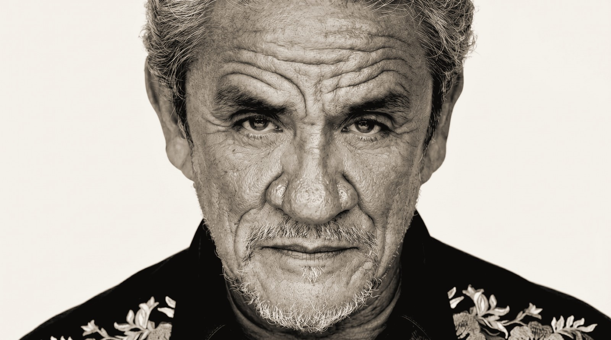
Por que esta celebração é diferente?
Porque ela não reduz a obra a uma data.
- 50 anos de carreira transformados em projeto nacional.
- Trilogia inédita, com arquitetura narrativa própria.
- Mais de um ano de duração.
- Lançamento nacional e registro histórico.
- Presença em todas as regiões do Brasil.
- A maior celebração da carreira de Zé Ramalho.
Este projeto não pretende transformar a obra de Zé Ramalho. Pretende celebrá-la, valorizá-la, ampliar seu alcance e construir uma comemoração compatível com a importância que essa trajetória possui para a música brasileira.
Manifesto final
Há artistas que fazem sucesso. Há artistas que marcam gerações.
Há artistas que entram para a história. E existem aqueles raros que se transformam em parte da identidade cultural de um país. Durante cinquenta anos, Zé Ramalho fez exatamente isso.
Agora chegou o momento de celebrar essa história — não com uma turnê qualquer, mas com a maior homenagem já realizada à sua trajetória.
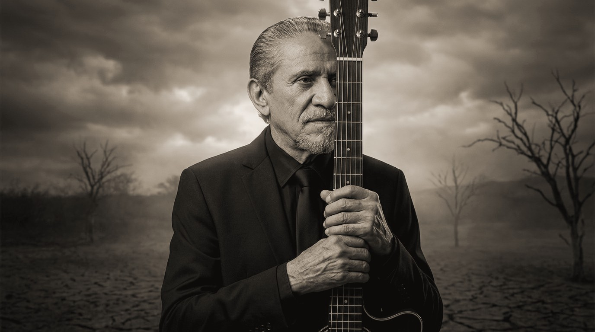
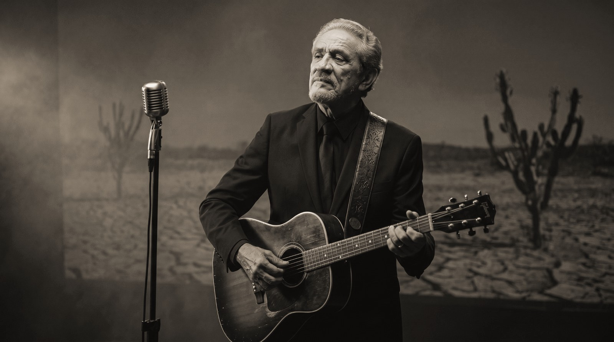
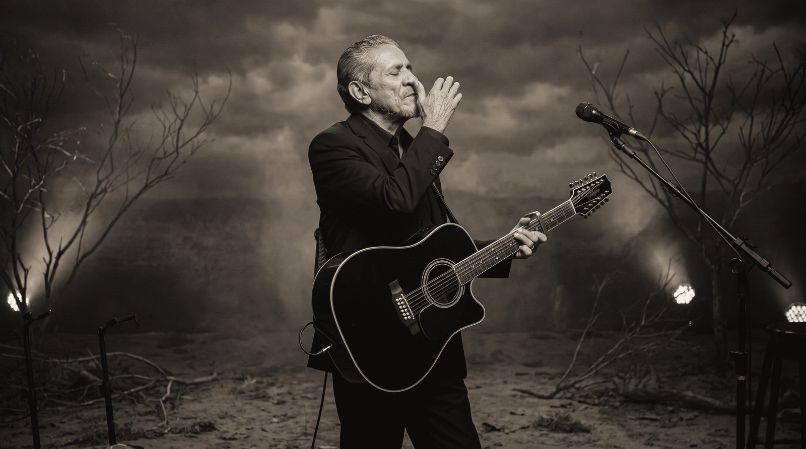